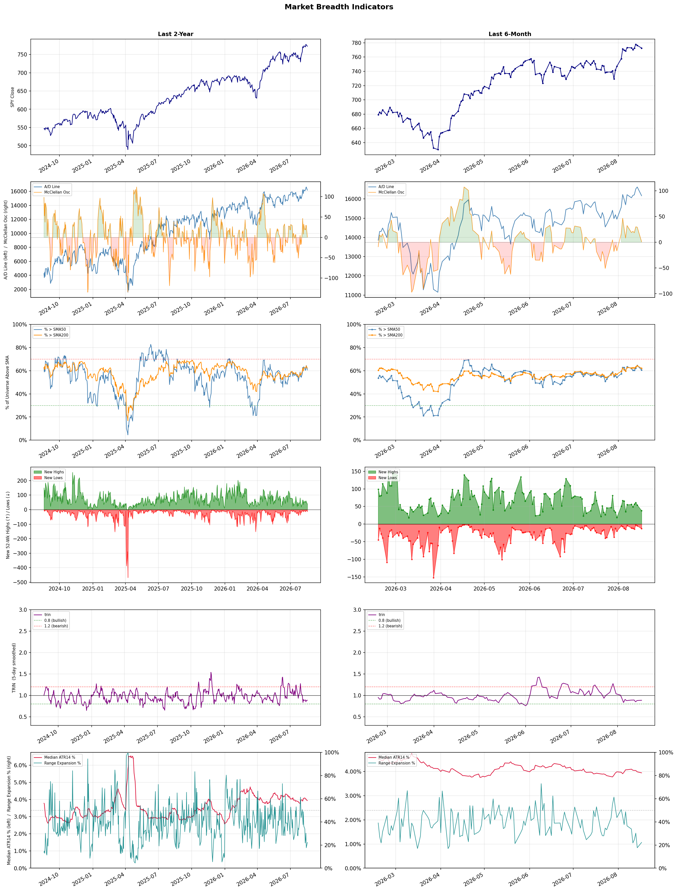

A daily market breadth and sector rotation report for active investors
| Item | Read |
|---|---|
| Regime | Risk-On |
| Risk posture | Aggressive |
| Universe | 1,332 stocks tracked · 38 new 52-week highs · 30 active swing setups |
| Breadth | 60.6% of tracked stocks are above SMA50, new highs exceed new lows (38 vs 13) |
| Leadership | Diagnostics & Research, Health Information Services, and Computer Hardware |
| Weakest groups | Solar, Footwear & Accessories, and Chemicals |
Use this report to prioritize research and chart review; validate entries, stops, liquidity, earnings, and risk before acting.
| Item | Read |
|---|---|
| Primary read | Risk-On regime with Aggressive risk posture. |
| Research queue | TWST, WGS, NTRA, IQV, A |
| Leadership focus | Diagnostics & Research, Health Information Services, and Computer Hardware |
| Caution list | Solar, Footwear & Accessories, and Chemicals |
| Review prompt | Check extension risk, chart location, fundamentals, valuation, and earnings before using any research row. |
| Item | Read |
|---|---|
| Primary read | 0 active risk warnings; use screen output as watchlist input only. |
| Bullish screens | SLS, IVZ, CVE, EQNR, ABUS |
| Bearish screens | STNE |
| Alerts / levels | Automated trigger, stop, ATR, liquidity, reward/risk, and event-risk levels are pending future enrichment. |
| Review prompt | Open the linked chart, define trigger and invalidation, then check liquidity and event risk independently. |
Risk Posture: Aggressive — screen backdrop shows broad participation; still validate each setup independently
Metric context: McClellan below -50 = elevated selling pressure; below -100 = washout territory. Range Expansion = share of stocks with daily range above their 20-day average. Signal Density = share of tracked names appearing in signal screens.
| Breadth Date | % > SMA50 | % > SMA200 | New Highs | New Lows | McClellan | Median Range | Avg Range | Median ATR14 | Range Expansion | Signal Density |
|---|---|---|---|---|---|---|---|---|---|---|
| 2026-08-17 | 60.6% | 62.1% | 38 | 13 | 0.7 | 2.9% | 3.3% | 3.9% | 22.3% | 2.9% |

Prior comparison date: August 14, 2026
| Metric | Prior | Current | Change |
|---|---|---|---|
| Regime | Risk-On | Risk-On | unchanged |
| Risk Posture | Aggressive | Aggressive | unchanged |
| % > SMA50 | 65.1% | 60.6% | -4.5 pts |
| % > SMA200 | 64.0% | 62.1% | -1.9 pts |
| New Highs | 53 | 38 | -15 |
| New Lows | 4 | 13 | -9 |
Top-10 industries entering: Biotechnology. Top-10 industries leaving: Software - Infrastructure. New multi-signal long setups: ABUS, BTE, CGAU, CVE, DAR, EQNR, MU, OVV, OXY, ROKU. New multi-signal short setups: none.
| Status | Tickers | Read |
|---|---|---|
| Added | ABSI, ABUS, AKAM, BTE, BXSL, CGAU, CRSR, CVE | New technical screen matches vs prior report. |
| Removed | ABCL, AMT, ARMK, AVAH, BBIO, BNS, CMBT, EBC | No longer present in today's technical screen matches. |
| Still Active | APPS, COHU, FSLY, GRND, IVZ, MRK, PSNL | Appeared in both current and prior reports. |
| Promoted | none | Model Screen Score improved by at least 15 points. |
| Downgraded | none | Model Screen Score declined by at least 15 points. |
| Direction | Industry | ETF | Prior Rank | Current Rank | Days | Rank Change |
|---|---|---|---|---|---|---|
| Rose | Copper | COPX | 85 | 12 | 42 | +73 |
| Rose | Gold | GDX | 87 | 18 | 42 | +69 |
| Rose | Oil & Gas Integrated | XLE | 82 | 14 | 42 | +68 |
| Rose | Oil & Gas E&P | XOP | 84 | 21 | 42 | +63 |
| Rose | Steel | SLX | 80 | 20 | 42 | +60 |
Bull: Copper is experiencing rising relative strength primarily due to its critical role in the electrification and AI boom, as highlighted by the headlines discussing COPX as a key player in the "electrification squeeze" and the "pick-and-shovel AI trade." With increasing demand for electric vehicles, renewable energy infrastructure, and advanced technologies, copper's essential properties make it indispensable, thus driving investor interest and pushing prices higher. Additionally, the recent outperformance of copper ETFs, as noted in the headlines, suggests that Wall Street is beginning to recognize copper's potential as a valuable asset, further fueling its upward momentum.
Bear: While the bullish case for copper hinges on its role in electrification and AI, it overlooks significant headwinds such as potential oversupply and geopolitical risks in major copper-producing regions. Additionally, the recent rally in copper prices may be more a result of speculative trading rather than sustained demand, as evidenced by the volatility in related stocks and ETFs. Investors should be cautious, as a correction could occur if economic growth falters or if alternative materials gain traction in the technologies driving current demand.
Verdict: Copper's rising prices are fundamentally driven by its critical role in the electrification of transportation and renewable energy, alongside growing investor interest in copper-related ETFs as a response to increasing demand from electric vehicles and AI technologies. However, investors should remain cautious of potential oversupply and geopolitical risks that could trigger a price correction, particularly if economic growth slows or alternative materials gain market share.
Sources: Yahoo Finance, Google News
Bull: Gold is experiencing a rise in relative strength primarily due to increasing investor confidence and demand, as evidenced by headlines indicating that gold prices have surged to $4,400, prompting miners to catch up. Additionally, the bullish sentiment surrounding gold stocks, highlighted by significant gains in companies like Newmont, suggests that investors are reallocating their portfolios towards gold amid economic uncertainty, further solidifying gold's position as a safe-haven asset. The mention of a sector rotation in Barrick's stock valuation also points to a broader trend where investors are favoring gold over other sectors, reinforcing its rising strength in the market.
Bear: While the recent surge in gold prices and the performance of miners like Newmont may seem promising, this bullish sentiment could be misleading. The gold market is heavily influenced by macroeconomic factors such as rising interest rates and inflationary pressures, which could erode gold's appeal as a safe-haven asset. Additionally, the mention of losses in companies like Lingbao Gold suggests that not all miners are benefiting equally, indicating potential volatility and risks within the sector that could undermine the overall bullish narrative.
Verdict: The recent rise in gold prices can be attributed to increasing investor confidence driven by economic uncertainty, leading to a shift towards gold as a safe-haven asset. However, key risks remain, particularly from rising interest rates and inflationary pressures, which could diminish gold's attractiveness and introduce volatility within the sector. Investors should closely monitor macroeconomic indicators and the performance of individual mining companies to navigate potential risks while capitalizing on the current bullish sentiment.
Sources: Yahoo Finance, Google News
Bull: The Oil & Gas Integrated sector is experiencing rising relative strength primarily due to increasing fair value estimates for major oil stocks, driven by higher oil prices, as highlighted in the Morningstar report. Additionally, the recent gains in energy stocks, as noted in multiple sector updates, suggest a growing investor confidence in the sector's resilience amidst broader market fluctuations, positioning companies like APA and Woodside Energy for further upside potential. This bullish sentiment is further supported by the identification of top oil and gas stocks to buy, indicating a favorable outlook for the industry moving forward.
Bear: While rising oil prices may temporarily boost fair value estimates and investor sentiment in the Oil & Gas Integrated sector, this optimism overlooks several critical headwinds. Increasing geopolitical tensions, potential regulatory changes aimed at reducing carbon emissions, and the ongoing shift towards renewable energy sources could undermine long-term demand for fossil fuels. Additionally, the recent gains in energy stocks may be more reflective of short-term market fluctuations rather than a sustainable recovery, as broader economic uncertainties continue to loom over the sector.
Verdict: The Oil & Gas Integrated sector is experiencing a rise in relative strength primarily due to increasing fair value estimates fueled by higher oil prices and growing investor confidence, as highlighted by recent sector updates. However, key risks remain, including geopolitical tensions and regulatory pressures aimed at reducing carbon emissions, which could undermine long-term demand for fossil fuels and challenge the sustainability of this bullish trend. Investors should closely monitor these developments while considering positions in leading companies like APA and Woodside Energy.
Sources: Yahoo Finance, Google News
Bull: The Oil & Gas Exploration and Production (E&P) sector, as represented by the XOP ETF, is experiencing rising relative strength primarily due to the recent surge in oil prices, which have topped $100 for the first time since May, indicating strong demand and tight supply conditions in the market. Additionally, the performance of key players like Antero Resources and Magnolia Oil & Gas, coupled with a favorable outlook for energy stocks highlighted by Morningstar, suggests robust fundamentals supporting the sector's growth amid increasing investor interest. This momentum is further buoyed by the reopening of critical trade routes, which could enhance supply chain efficiencies and market accessibility for E&P companies.
Bear: While the recent surge in oil prices may seem promising, it is crucial to consider the potential volatility and geopolitical risks that could quickly reverse these gains, particularly with the reopening of critical straits that could lead to increased supply and dampen prices. Additionally, the XOP ETF's relatively concentrated holdings raise concerns about its resilience; if a few key players falter, the entire ETF could suffer disproportionately. Furthermore, the broader economic environment, including potential recessions and shifts towards renewable energy, poses significant headwinds that could undermine the long-term viability of the E&P sector.
Verdict: The Oil & Gas E&P sector is experiencing upward momentum primarily due to rising oil prices driven by strong demand and constrained supply, alongside positive performance from major companies in the space. However, investors should remain cautious of potential volatility stemming from geopolitical risks and the possibility of increased supply from reopened trade routes, which could undermine price stability and the sector's growth prospects.
Sources: Yahoo Finance, Google News
Bull: The rising relative strength of the steel industry, as evidenced by the VanEck Steel ETF (SLX) hitting new 52-week highs, is primarily driven by increased demand spurred by advancements in artificial intelligence and infrastructure investments, as highlighted in the recent headlines. Additionally, supportive regulatory developments, such as favorable policies from Washington for steelmakers, are likely enhancing profitability and market sentiment, positioning steel stocks for robust growth in the coming years.
Bear: While the rising relative strength of the steel industry and the recent 52-week highs in the VanEck Steel ETF (SLX) may seem promising, these gains could be overstated due to speculative enthusiasm rather than sustainable demand. The steel sector is facing significant headwinds, including potential overcapacity, rising raw material costs, and the looming threat of economic slowdowns that could dampen infrastructure spending and AI-related demand. Furthermore, regulatory support may not be sufficient to offset these challenges, leading to a potential correction in stock valuations as market realities set in.
Verdict: The steel industry's recent rise, as reflected in the VanEck Steel ETF (SLX) reaching new highs, is fundamentally driven by increased demand from infrastructure investments and advancements in artificial intelligence, bolstered by supportive regulatory policies. However, investors should remain cautious of the key risk posed by potential overcapacity and rising raw material costs, which could undermine profitability and lead to a market correction if economic conditions shift.
Sources: Yahoo Finance, Google News
| Direction | Industry | ETF | Prior Rank | Current Rank | Days | Rank Change |
|---|---|---|---|---|---|---|
| Fell | REIT - Healthcare Facilities | XLRE | 7 | 76 | 28 | -69 |
| Fell | Healthcare Plans | IHF | 1 | 68 | 42 | -67 |
| Fell | REIT - Retail | N/A | 9 | 75 | 28 | -66 |
| Fell | Beverages - Non-Alcoholic | XLP | 13 | 77 | 42 | -64 |
| Fell | REIT - Office | XLRE | 6 | 65 | 28 | -59 |
Bear: While the bull analyst attributes the relative weakness in Healthcare Facilities REITs to broader market pressures, it is essential to recognize that the sector faces specific challenges that may undermine its stability and growth prospects. Rising interest rates, even in a "no hike" scenario, can still exert upward pressure on borrowing costs, impacting property valuations and reducing profitability. Furthermore, ongoing concerns about healthcare reimbursement rates, regulatory changes, and increasing operational costs could exacerbate the sector's vulnerabilities, making it less attractive to investors despite any perceived stability.
Bull: The relative weakness of the Healthcare Facilities REIT sector appears to be driven by broader market pressures, particularly from the financial sector, as indicated by multiple headlines highlighting declines in financial stocks. This sector-wide selling may be creating a risk-off environment, leading investors to shy away from REITs, including healthcare facilities, despite their potential stability and growth prospects. Additionally, the focus on "no hike" scenarios suggests that while interest rates may remain stable, the overall market sentiment is cautious, impacting the relative strength of healthcare REITs.
Verdict: The recent decline in Healthcare Facilities REITs is primarily driven by a combination of broader market pressures and specific sector challenges, including rising interest rates and concerns over healthcare reimbursement rates. Investors should be cautious, as the upward pressure on borrowing costs and potential regulatory changes could significantly impact profitability and property valuations, making the sector less appealing despite its perceived stability. It is advisable to closely monitor interest rate trends and regulatory developments before making investment decisions in this space.
Sources: Yahoo Finance, Google News
Bear: While the bull analyst attributes the relative weakness in the Healthcare Plans sector to profit-taking and short-term volatility, a more concerning factor is the potential long-term impact of healthcare policy changes and regulatory scrutiny that could pressure margins and profitability. Additionally, the mixed sentiment surrounding major players like Humana and UnitedHealth suggests that investor confidence is waning, which could indicate deeper structural issues within the sector rather than just temporary fluctuations. This environment raises significant concerns about the sustainability of growth in healthcare stocks, making a bearish outlook more plausible.
Bull: The relative weakness in the Healthcare Plans sector, as indicated by the falling trend against other industries, can be attributed to recent profit-taking after UnitedHealth's pullback from its 52-week high, as highlighted in the headlines. Additionally, the mixed sentiment surrounding stock outlooks for major players like Humana and UnitedHealth, coupled with broader market concerns about healthcare policy changes and Medicare updates, may be contributing to investor caution and volatility in the sector. This environment creates uncertainty, leading to a temporary decline in relative strength despite the long-term bullish outlook for healthcare stocks.
Verdict: The recent decline in the Healthcare Plans sector appears to be driven by a combination of profit-taking following UnitedHealth's peak and heightened investor caution due to uncertainty surrounding healthcare policy changes and regulatory scrutiny. The key risk highlighted by the bear case is the potential for these policy shifts to pressure margins and profitability, suggesting that investors should closely monitor legislative developments and market sentiment to assess the sustainability of growth in this sector.
Sources: Yahoo Finance, Google News
Bear: While the bull analyst suggests that the relative weakness in the REIT - Retail sector is a temporary market trend, it overlooks the fundamental challenges facing retail real estate, such as the ongoing shift towards e-commerce, rising interest rates, and increasing operational costs. Additionally, the shrinking Canadian REIT sector signals deeper structural issues that could lead to further declines in property values and tenant demand, undermining the supposed attractiveness of high-yield opportunities like Supermarket Income REIT. Investors should be cautious, as these headwinds may outweigh any short-term prospects for recovery in the retail real estate market.
Bull: The relative weakness in the REIT - Retail sector can be attributed to broader market trends favoring other real estate sectors, as highlighted by Morningstar's focus on outperforming real estate investments. Additionally, the headlines indicate a growing concern over the shrinking Canadian REIT sector, which may reflect broader economic pressures affecting retail real estate, leading investors to seek opportunities in more resilient sectors. However, the mention of high-yield opportunities, such as Supermarket Income REIT, suggests that while the sector faces challenges, there are still attractive investment prospects for those willing to look beyond the current market sentiment.
Verdict: The retail REIT sector is experiencing a decline primarily due to the persistent shift towards e-commerce, rising interest rates, and increasing operational costs, which are straining traditional brick-and-mortar retail. While there may be high-yield opportunities like Supermarket Income REIT, investors should remain cautious of the underlying structural challenges that could further depress property values and tenant demand, potentially outweighing short-term recovery prospects. It is advisable to closely monitor these economic indicators and consider diversifying into more resilient sectors.
Sources: Google News
Bear: While the bull analyst attributes the sector's decline to broader market concerns and mixed consumer sentiment, it's crucial to recognize that the non-alcoholic beverage sector faces fundamental challenges that extend beyond market volatility. The rising popularity of health-conscious alternatives and changing consumer preferences toward alcoholic beverages, as highlighted in recent headlines, could signify a long-term shift away from traditional non-alcoholic products. Additionally, with inflationary pressures impacting disposable income, consumers may prioritize spending on essential goods over non-alcoholic beverages, further straining the sector's growth prospects.
Bull: The recent decline in the relative strength of the Beverages - Non-Alcoholic sector can be attributed to broader market concerns reflected in the headlines, particularly the mixed performance of consumer stocks amid changing investor sentiment and lower rate hike expectations. As consumer stocks experience volatility, it may lead to a cautious outlook on discretionary spending, impacting the non-alcoholic beverage sector, despite strong profitability rankings for major players like Coca-Cola and PepsiCo. Additionally, the focus on alcohol stocks in the media suggests a shift in consumer preferences, which could further pressure non-alcoholic beverage sales.
Verdict: The non-alcoholic beverage sector's decline is primarily driven by a fundamental shift in consumer preferences towards health-conscious alternatives and alcoholic beverages, compounded by inflationary pressures that are leading consumers to prioritize essential goods over discretionary spending. The key risk highlighted by the bear case is the potential for these changing preferences to result in a sustained downturn for traditional non-alcoholic products, necessitating a strategic pivot for companies in the sector to adapt to evolving consumer demands.
Sources: Yahoo Finance, Google News
Bear: While the bull analyst points to potential recovery opportunities in undervalued office REITs, the persistent decline in financial stocks raises significant concerns about the overall economic environment, which could lead to reduced demand for office space as companies reassess their real estate needs amid rising remote work trends. Additionally, the "no hike" scenario may not be as beneficial as suggested, as prolonged low interest rates could indicate a struggling economy, further exacerbating occupancy challenges and rental income pressures for office REITs. Thus, the fundamental outlook for the sector remains bleak, overshadowed by structural shifts in work habits and economic uncertainty.
Bull: The relative weakness in the Office REIT sector can be attributed to broader economic concerns, particularly in the financial sector, as indicated by the repeated headlines about declining financial stocks. This decline may signal investor apprehension about potential interest rate hikes or economic slowdowns, which can negatively impact office occupancy rates and rental income. However, the recent articles highlighting the potential for undervalued office REITs and their resilience in a "no hike" scenario suggest that there may be significant opportunities for recovery and growth in this sector moving forward.
Verdict: The office REIT sector is experiencing a decline primarily due to economic uncertainty, particularly stemming from weakness in the financial sector and shifting work habits toward remote arrangements. The key risk highlighted by the bear case is that prolonged low interest rates may signal a struggling economy, potentially leading to decreased demand for office space and further pressures on occupancy rates and rental income. Investors should approach opportunities in undervalued office REITs with caution, closely monitoring economic indicators and trends in remote work to assess the viability of recovery.
Sources: Yahoo Finance, Google News
| Industry | Rank | ETF | 7d | 14d | 28d | 42d | Chg 42d | Size | 20D | 60D | Composite | Active Setups |
|---|---|---|---|---|---|---|---|---|---|---|---|---|
| Diagnostics & Research | 1 | N/A | 1 | 5 | 3 | 4 | +3 | 16 | 12.5% | 49.5% | 0.951 | 1 |
| Health Information Services | 2 | N/A | 2 | 38 | 8 | 6 | +4 | 12 | 13.3% | 43.8% | 0.916 | 0 |
| Computer Hardware | 3 | XLK | 15 | 48 | 53 | 37 | +34 | 15 | 34.9% | 33.3% | 0.889 | 1 |
| Oil & Gas Refining & Marketing | 4 | CRAK | 5 | 1 | 1 | 30 | +26 | 7 | 7.6% | 29.8% | 0.874 | 0 |
| Software - Application | 5 | IGV | 4 | 12 | 21 | 42 | +37 | 74 | 11.6% | 21.6% | 0.835 | 1 |
| Medical Devices | 6 | N/A | 8 | 9 | 40 | 27 | +21 | 20 | 10.9% | 17.8% | 0.830 | 1 |
| Insurance Brokers | 7 | N/A | 28 | 11 | 14 | 20 | +13 | 6 | 8.9% | 22.4% | 0.825 | 0 |
| Banks - Diversified | 8 | N/A | 12 | 8 | 17 | 10 | +2 | 16 | 6.3% | 17.5% | 0.824 | 0 |
| Biotechnology | 9 | XBI | 13 | 50 | 15 | 3 | -6 | 91 | 8.3% | 26.4% | 0.814 | 2 |
| Medical Care Facilities | 10 | IHF | 9 | 16 | 5 | 7 | -3 | 9 | 7.9% | 25.3% | 0.811 | 0 |
Rank columns (7d–42d) show the industry's rank that many trading days ago — lower is stronger. Chg 42d = rank change vs 42 trading days ago — positive means the industry moved up. 20D and 60D are the mean stock return within the industry over that period. Active Setups: count of today's swing-trade candidates from this industry appearing across all signal screens.
| Industry | Rank | ETF | 7d | 14d | 28d | 42d | Chg 42d | Size | 20D | 60D | Composite | Active Setups |
|---|---|---|---|---|---|---|---|---|---|---|---|---|
| Solar | 88 | TAN | 87 | 82 | 78 | 61 | -27 | 8 | -10.5% | -24.6% | 0.049 | 0 |
| Footwear & Accessories | 87 | N/A | 67 | 57 | 47 | 40 | -47 | 5 | -11.8% | 1.3% | 0.132 | 0 |
| Chemicals | 86 | N/A | 88 | 84 | 81 | 86 | 0 | 8 | -5.2% | -23.5% | 0.158 | 1 |
| REIT - Diversified | 85 | N/A | 80 | 64 | 33 | 62 | -23 | 5 | -7.1% | -5.2% | 0.161 | 0 |
| Agricultural Inputs | 84 | N/A | 71 | 70 | 45 | 81 | -3 | 5 | -5.8% | -6.1% | 0.182 | 1 |
| Utilities - Independent Power Producers | 83 | XLU | 86 | 80 | 79 | 75 | -8 | 5 | -1.1% | -8.0% | 0.197 | 0 |
| Integrated Freight & Logistics | 82 | N/A | 79 | 58 | 27 | 38 | -44 | 7 | -9.3% | -1.6% | 0.220 | 0 |
| Auto Manufacturers | 81 | N/A | 66 | 61 | 69 | 69 | -12 | 10 | -3.1% | -5.2% | 0.260 | 0 |
| Utilities - Regulated Electric | 80 | XLU | 82 | 65 | 38 | 44 | -36 | 29 | -2.4% | -0.6% | 0.279 | 0 |
| Gambling | 79 | N/A | 83 | 72 | 22 | 28 | -51 | 5 | -8.1% | -0.3% | 0.286 | 0 |
Rank columns (7d–42d) show the industry's rank that many trading days ago — lower is stronger. Chg 42d = rank change vs 42 trading days ago — positive means the industry moved up. 20D and 60D are the mean stock return within the industry over that period. Active Setups: count of today's swing-trade candidates from this industry appearing across all signal screens.
These are research candidates from top-ranked stocks, capped at five names per industry to avoid over-concentration. Returns shown (60D, 120D, 250D) are historical — they reflect where prices have already moved, not forward expectations. Extension Risk flags names that may require extra patience or a better entry point. They are not buy signals.
Chart: TV = TradingView chart (opens in browser); PDF = local chart file (if downloaded).
| Ticker | Name | Industry | Industry Rank | Market Cap | 60D Hist | 120D Hist | 250D Hist | Extension Risk | Research Reason | Chart |
|---|---|---|---|---|---|---|---|---|---|---|
| TWST | Twist Bioscience | Diagnostics & Research | 1 | N/A | 151.3% | 158.7% | 342.4% | Very extended | Top-ranked in industry; very extended | TV |
| WGS | GeneDx Holdings | Diagnostics & Research | 1 | N/A | 73.0% | -4.1% | -38.5% | Extended | Top-ranked in industry; extended | TV |
| NTRA | Natera | Diagnostics & Research | 1 | N/A | 60.3% | 50.1% | 92.7% | Extended | Top-ranked in industry; extended | TV |
| IQV | IQVIA Holdings | Diagnostics & Research | 1 | N/A | 40.7% | 46.3% | 25.3% | Constructive | Top-ranked in industry | TV |
| A | Agilent Technologies | Diagnostics & Research | 1 | N/A | 30.7% | 19.8% | 26.7% | Constructive | Top-ranked in industry | TV |
| TXG | 10x Genomics | Health Information Services | 2 | N/A | 141.8% | 203.6% | 330.8% | Very extended | Top-ranked in industry; very extended | TV |
| HTFL | Heartflow | Health Information Services | 2 | N/A | 53.2% | 84.2% | 39.9% | Extended | Top-ranked in industry; extended | TV |
| GDRX | GoodRx | Health Information Services | 2 | N/A | 47.6% | 57.0% | -27.3% | Constructive | Top-ranked in industry | TV |
| VEEV | Veeva Systems | Health Information Services | 2 | N/A | 44.5% | 35.6% | -15.5% | Constructive | Top-ranked in industry | TV |
| SDGR | Schrodinger | Health Information Services | 2 | N/A | 41.2% | 54.0% | -13.2% | Constructive | Top-ranked in industry | TV |
| UMAC | Unusual Machines | Computer Hardware | 3 | N/A | 109.8% | 126.5% | 200.0% | Very extended | Top-ranked in industry; very extended | TV |
| P | Everpure | Computer Hardware | 3 | N/A | 50.1% | 72.8% | 100.1% | Extended | Top-ranked in industry; extended | TV |
| SMCI | Super Micro Computer | Computer Hardware | 3 | N/A | 14.4% | 23.0% | -16.5% | Constructive | Top-ranked in industry | TV |
| IONQ | IonQ Inc | Computer Hardware | 3 | N/A | -10.7% | 48.1% | 16.4% | Lagging | Top-ranked in industry; lagging | TV |
| VELO | Velo3D | Computer Hardware | 3 | N/A | -15.7% | 61.1% | 164.3% | Lagging | Top-ranked in industry; lagging | TV |
| PBF | PBF Energy | Oil & Gas Refining & Marketing | 4 | N/A | 80.5% | 117.9% | 224.7% | Extended | Top-ranked in industry; extended | TV |
| MPC | Marathon Petroleum | Oil & Gas Refining & Marketing | 4 | N/A | 38.6% | 84.1% | 124.5% | Constructive | Top-ranked in industry | TV |
| VLO | Valero Energy | Oil & Gas Refining & Marketing | 4 | N/A | 38.0% | 75.7% | 159.2% | Constructive | Top-ranked in industry | TV |
| DINO | HF Sinclair | Oil & Gas Refining & Marketing | 4 | N/A | 34.4% | 95.8% | 122.1% | Constructive | Top-ranked in industry | TV |
| PSX | Phillips 66 | Oil & Gas Refining & Marketing | 4 | N/A | 31.9% | 56.5% | 101.3% | Constructive | Top-ranked in industry | TV |
These are technical screen matches from existing signal files. They are not trade recommendations. Trigger, stop, ATR, liquidity, reward/risk, and event risk still require separate validation until those inputs are available.
Model Screen Score is weighted by signal count, industry rank, freshness, and setup type. It is not a probability of profit, expected return, or suitability rating. Industry cap: max 3 candidates per industry.
Signal glossary: Momentum Pullback = stock in an uptrend that has pulled back 10–30% and shows re-entry conditions. MA Compression = short- and long-term moving averages converging, often preceding a directional move. Three-Day Up/Down = three consecutive closes in the same direction. New 52Wk High/Low = price reached a new annual extreme.
Chart: TV = TradingView chart (opens in browser); PDF = local chart file (if downloaded).
| Ticker | Industry | Setups | Close | Industry Rank | Signal Count | Model Screen Score | Reason | Chart |
|---|---|---|---|---|---|---|---|---|
| SLS | Biotechnology | Momentum Pullback; Three-Day Up | 13.00 | 9 | 2 | 85 | Multi-signal; top industry pullback | TV |
| IVZ | Asset Management | New 52Wk High; Three-Day Up | 32.57 | 13 | 2 | 85 | Multi-signal; new-high strength | TV |
| CVE | Oil & Gas Integrated | New 52Wk High; Three-Day Up | 32.13 | 14 | 2 | 85 | Multi-signal; new-high strength | TV |
| EQNR | Oil & Gas Integrated | New 52Wk High; Three-Day Up | 41.82 | 14 | 2 | 85 | Multi-signal; new-high strength | TV |
| ABUS | Biotechnology | MA Compression; Three-Day Up | 4.71 | 9 | 2 | 80 | Multi-signal; top industry setup | TV |
| CGAU | Gold | New 52Wk High; Three-Day Up | 21.92 | 18 | 2 | 77 | Multi-signal; new-high strength | TV |
| COHU | Semiconductor Equipment & Materials | Momentum Pullback; Three-Day Up | 62.62 | 19 | 2 | 77 | Multi-signal; pullback setup | TV |
| BTE | Oil & Gas E&P | Momentum Pullback; Three-Day Up | 4.55 | 21 | 2 | 77 | Multi-signal; pullback setup | TV |
| OVV | Oil & Gas E&P | New 52Wk High; Three-Day Up | 63.85 | 21 | 2 | 77 | Multi-signal; new-high strength | TV |
| OXY | Oil & Gas E&P | Momentum Pullback; Three-Day Up | 59.04 | 21 | 2 | 77 | Multi-signal; pullback setup | TV |
| ROKU | Entertainment | New 52Wk High; Three-Day Up | 158.31 | 22 | 2 | 77 | Multi-signal; new-high strength | TV |
| MRK | Drug Manufacturers - General | New 52Wk High; Three-Day Up | 135.97 | 27 | 2 | 70 | Multi-signal; new-high strength | TV |
| DAR | Packaged Foods | New 52Wk High; Three-Day Up | 67.67 | 29 | 2 | 70 | Multi-signal; new-high strength | TV |
| MU | Semiconductors | Momentum Pullback; Three-Day Up | 1011.75 | 44 | 2 | 65 | Multi-signal; pullback setup | TV |
| PSNL | Diagnostics & Research | Momentum Pullback | 13.89 | 1 | 1 | 65 | Single-signal; top industry pullback | TV |
| CRSR | Computer Hardware | Momentum Pullback | 12.24 | 3 | 1 | 65 | Single-signal; top industry pullback | TV |
| APPS | Software - Application | Momentum Pullback | 12.24 | 5 | 1 | 58 | Single-signal; top industry pullback | TV |
| FSLY | Software - Application | Momentum Pullback | 29.04 | 5 | 1 | 58 | Single-signal; top industry pullback | TV |
| GRND | Software - Application | Momentum Pullback | 15.81 | 5 | 1 | 58 | Single-signal; top industry pullback | TV |
| NVCR | Medical Devices | Momentum Pullback | 17.53 | 6 | 1 | 58 | Single-signal; top industry pullback | TV |
| SNDK | Computer Hardware | Three-Day Up | 1786.85 | 3 | 1 | 55 | Single-signal; top industry setup | TV |
| STX | Computer Hardware | Three-Day Up | 994.79 | 3 | 1 | 55 | Single-signal; top industry setup | TV |
| ABSI | Biotechnology | Momentum Pullback | 9.24 | 9 | 1 | 50 | Single-signal; top industry pullback | TV |
| AKAM | Software - Infrastructure | Momentum Pullback | 122.97 | 11 | 1 | 50 | Single-signal; pullback setup | TV |
| BXSL | Asset Management | MA Compression | 24.21 | 13 | 1 | 45 | Single-signal; compression setup | TV |
| OBDC | Asset Management | MA Compression | 11.50 | 13 | 1 | 45 | Single-signal; compression setup | TV |
| LPTH | Electronic Components | Momentum Pullback | 14.80 | 17 | 1 | 42 | Single-signal; pullback setup | TV |
| ENTG | Semiconductor Equipment & Materials | Momentum Pullback | 163.09 | 19 | 1 | 42 | Single-signal; pullback setup | TV |
| LRCX | Semiconductor Equipment & Materials | Momentum Pullback | 343.84 | 19 | 1 | 42 | Single-signal; pullback setup | TV |
Bearish setups — stocks making new lows or showing persistent downside patterns. Validate carefully before acting.
| Ticker | Industry | Setups | Close | Industry Rank | Signal Count | Model Screen Score | Reason | Chart |
|---|---|---|---|---|---|---|---|---|
| STNE | Software - Infrastructure | New 52Wk Low; Three-Day Down | 9.27 | 11 | 2 | 55 | Multi-signal; new-low weakness | TV |
How To Use This Report
| Use | Purpose |
|---|---|
| Market map | Start with breadth, regime, risk warnings, and what changed since the prior report. |
| Industry scan | Use leading, deteriorating, rising, and declining industries to focus research. |
| Research queue | Treat long-term candidates as names for deeper fundamental, valuation, and chart review. |
| Technical review | Treat bullish and bearish screen matches as watchlist inputs that require independent trigger, stop, liquidity, and event-risk checks. |
| Source follow-up | Use chart links and source files to verify raw inputs before relying on any row. |
What This Report Is Not
| Not | Meaning |
|---|---|
| Investment advice | The report does not evaluate personal objectives, risk tolerance, tax situation, account type, or suitability. |
| Buy/sell recommendation | Named tickers are research candidates or screen matches, not recommendations to transact. |
| Price target | The report does not provide fair value estimates, targets, or expected returns. |
| Trade plan | Trigger, stop, sizing, reward/risk, liquidity, and event-risk review remain separate user work. |
| Performance claim | Model Screen Score is not validated historical performance or a forecast of future results. |
| Item | Note |
|---|---|
| Version | Daily Report Methodology v1 |
| Model Screen Score | Screen-fit rank based on signal count, industry rank, freshness, and setup type. |
| Not predictive proof | The score is not expected return, probability of profit, historical validation, or suitability analysis. |
| Industry ranks | Composite industry ranks use existing daily ranking outputs and historical rank columns when available. |
| Research candidates | Long-term rows are research candidates from ranked stocks and leading industries, with historical returns labeled as historical only. |
| Technical matches | Bullish and bearish rows are screen matches requiring independent chart, trigger, stop, liquidity, and event-risk review. |
| Source | Status | Rows | Path |
|---|---|---|---|
| Market breadth | present | 1253 | breadth_20260817.csv |
| Industry composite rankings | present | 88 | all_industry_composite_20260817.csv |
| Top ranked stocks | present | 266 | top_ranked_composite_20260817.csv |
| All ranked stocks | present | 1332 | all_stocks_composite_sorted_20260817.csv |
| Top momentum pullbacks | present | 1482 | top_momentum_pullbacks_20260817.csv |
| MA compression | present | 1482 | ma_compression_stocks_20260817.csv |
| Three-day up/down | present | 137 | three_day_up_down_stocks_20260817.csv |
| New 52-week members | present | 51 | breadth_new_52wk_members_20260817.csv |
This report is generated from automated technical screens and is for informational and research purposes only. It is not investment advice, a solicitation, or a recommendation to buy or sell any security. Past performance is not indicative of future results. You are solely responsible for your own investment decisions. Consult a licensed financial advisor before acting on any information herein.